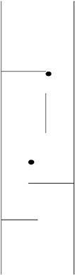
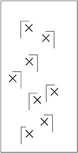

Remember Indiana Jones and his bullwhip? In these problems, Indy must overcome a series of obstacles to reach his goal. Indy stands on a board resembling a skateboard but that cannot tilt. Under the chassis are four metal ball bearings on universal swivels. He travels over a smooth frozen lake that has narrow wooden poles sticking up and out of the ice.
Here are the rules:
If he is going in a given direction and has not wrapped the whip around any pole, then he will keep going in a straight line. He cannot otherwise force the chassis to turn.
The whip is light, so throwing it in any direction does not change his direction materially.
He can unwhip a whip from a pole at will.
He can pull on the whip or just let it rotate him, but pushing the whip has no effect.
In Figure 1-2, you see a challenge for Indy to get from one end of a corridor that is partly blocked by two barriers to the other end. Assuming Indy can approach the corridor at any angle, how can he reach the other end without touching any barriers?
Figure 1-3 shows a solution. Indy comes in at an angle and then throws the whip as indicated by the dashed line to rotate around the pole.
Now here are the two problems for you:
Does Indy need more poles than the two shown by the dark circles in Figure 1-4 to go from the bottom to the top?

Figure 1-4: Indy wants to go from the bottom to the top without hitting the barriers or the walls. Indy may enter the bottom at any angle. Can Indy do it with the two poles indicated as black circles?
There are several L-shaped barriers and several objects (at the Xs in Figure 1-5) that Indy wants to collect in a game called Treasure Skater. What is the minimum number of poles he will need and where should he place them?

Figure 1-5: What is the minimum number of poles Indy will need to skate over all the Xs?